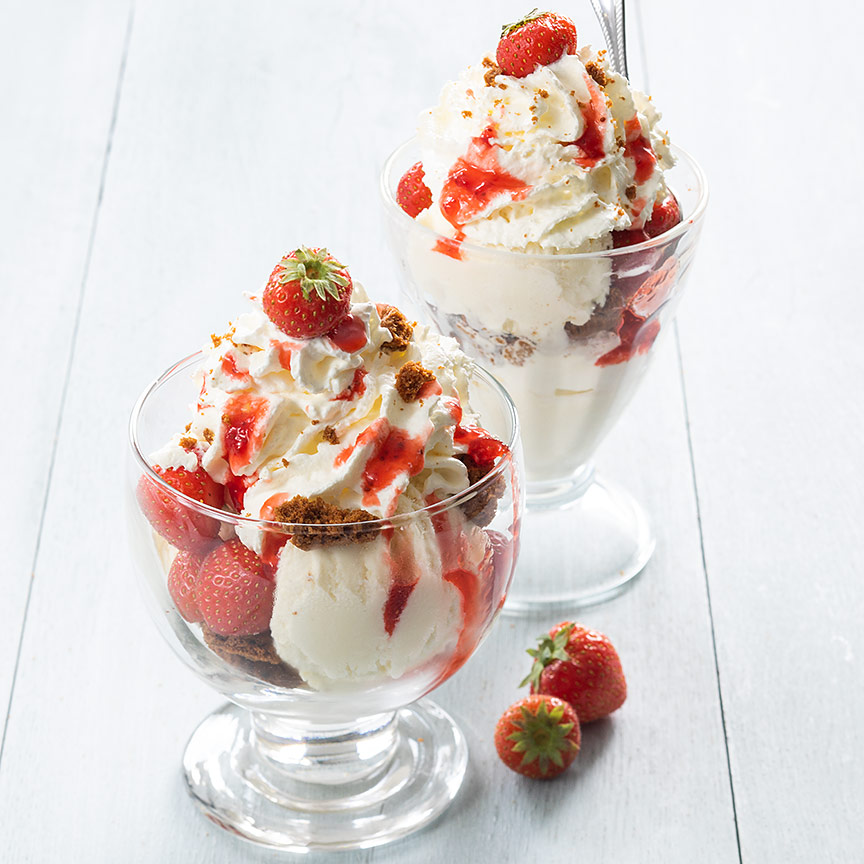

Voorgerecht
Hoofdgerecht
Nagerecht
Aardbeien coupe
Lekkere zomerse ijscoupe met frisse aardbeien, krokante koekjes en vanille ijs, een super makkelijk nagerecht dat binnen een paar minuten klaar is!
Ingrediënten
250 gram aardbeien
Vanille ijs
4 Bastogne koeken
Een bus slagroom
Aardbeiensaus
Bereidingswijze
Snijd de grote aardbeien in stukken en houd 4 mooie kleine aardbeien apart.
Breek de koekjes in stukjes.
Schep 2 bollen ijs in een kommetje of glazen coupe en verdeel wat aardbeien en koekkruimels er over.
Schep er wat meer ijs op met aardbeien en koekjes.
Spuit als laaste nog een mooie toef slagroom bovenop. Garneer de aarbeien coupe met aardbeiensaus en de de apart gehouden aarbeien.

Tip
Deze aardbeien coupe is ook lekker met wat plakjes banaan.